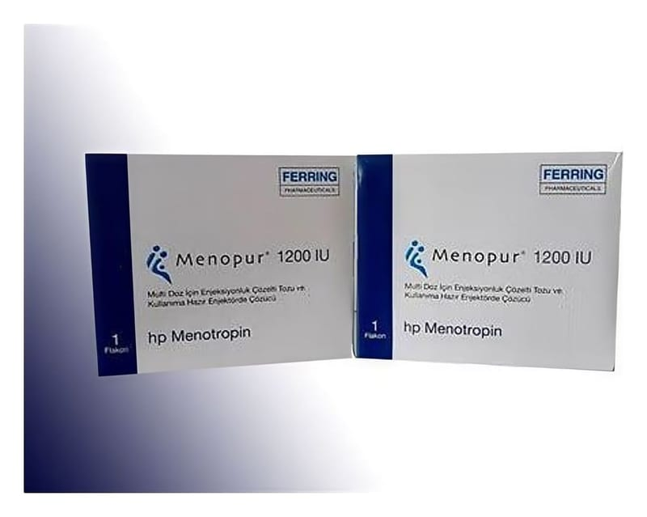

Menopur 1200 IU Multi Doz İçin SC Enjeksiyonluk Çözelti Tozu İçeren Flakon Ve Kullanıma Hazır Enjektorde Çözücü (1 Adet Flakon + 2 Adet Kullanıma Hazır Enjektor)

Ne için kullanılır
KT · Bölüm 1MENOPUR kullanılmadan önce bir sıvı (çözücü) ile karıştırılması gereken toz formunda üretilmektedir. Deri altına enjeksiyon yoluyla kullanılır. MENOPUR, 1 adet çözelti toz flakonu ve sulandırma için çözücü içeren 2 adet kullanıma hazır dolu enjektör, sulandırma için 1 adet iğne, 18 adet alkollü tampon ve uygulama için FSH/LH birimi olarak işaretlenmiş 18 adet tek kullanımlık enjektör içeren ambalajlar halinde piyasaya sunulmaktadır.
09.07.2015 2/12 MENOPUR, iki farklı hormonal aktiviteye sahiptir; folikül uyarıcı hormon (FSH) ve luteinizan hormon (LH). FSH ve LH, hem kadınlarda hem de erkeklerde üretilen doğal hormonlardır. Üreme organlarının normal bir şekilde çalışmalarına yardımcı olurlar. MENOPUR içindeki FSH ve LH, menopoz dönemine girmiş kadınların idrarından elde edilmekte, ileri derecede saflaştırıldıktan sonra oluşan bileşiğe menotropin adı verilmektedir. MENOPUR
aşağıdaki iki durumda, kadınlardaki kısırlığın (infertilite) tedavisi için kullanılmaktadır: Yumurtalık organları yumurta üretemediği için hamile kalamayan kadınlar (polikistik over hastalığı denilen çok sayıda yumurtalık kistinden oluşan tablo dahil). MENOPUR bu durumda, infertilite tedavisi için klomifen sitrat adındaki bir ilacı kullanmış, ancak bu ilaçtan yarar görememiş kadınlarda kullanılır. Yardımla üreme teknikleri uygulanan kadınlarda; örneğin in vitro fertilizasyon/embriyo transferi (IVF), gamet intra-fallopian transfer (GIFT) ve sitoplazma içine sperm enjeksiyonu (ICSI). MENOPUR kadınların yumurtalıklarında, içinde bir yumurtanın büyüyebileceği çok sayıda yumurta kesesinin gelişmesine yardımcı olur.